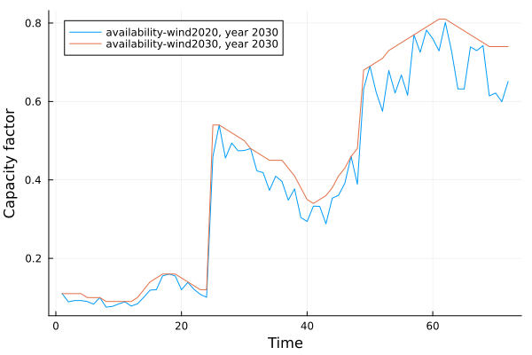

Multi-Year Investment Pathways
Let's explore the multi-year investments in Tulipa. We will talk about discount approaches and different investment methods. The latter is an example for different levels of detail in Tulipa.
1. Set up
- Paste the code below that add the packages and instantiate your enviroment (if you don't have it already)
using Pkg: Pkg # Julia package manager (like pip for Python)
Pkg.activate(".") # Creates and activates the project in the new folder - notice it creates Project.toml and
# Or enter package mode (type ']') and run 'pkg> activate .'
# Manifest.toml in your folder for reproducibility
Pkg.add("TulipaEnergyModel")
Pkg.add("TulipaIO")
Pkg.add("DuckDB")
Pkg.add("DataFrames")
Pkg.add("Plots")
Pkg.instantiate()- Paste the code below that loads the packages in the file
import TulipaIO as TIO
import TulipaEnergyModel as TEM
using DuckDB
using DataFrames
using Plots2. The problem & explore the files
We are modeling two milestone years 2030 and 2050. The system has some initial wind capacity built in 2020, the model can choose to invest in wind in both milestone years.
There are two pairs of input-output files, we start with the simple one.
3. Discount parameters
Run TEM
connection = DBInterface.connect(DuckDB.DB)
input_dir = joinpath(@__DIR__, "my-awesome-energy-system/tutorial-6-simple-method")
TIO.read_csv_folder(connection, input_dir)
TEM.populate_with_defaults!(connection)
energy_problem = TEM.run_scenario(connection)EnergyProblem:
- Model created!
- Number of variables: 290
- Number of constraints for variable bounds: 290
- Number of structural constraints: 432
- Model solved!
- Termination status: OPTIMAL
- Objective value: 8.502460892530702e6
- Objective breakdown:
- assets_fixed_cost_aggregated_vintage_method: 3.8553e6
- assets_fixed_cost_compact_vintage_method: 0.0
- assets_investment_cost: 184970.34199707804
- flows_fixed_cost: 0.0
- flows_investment_cost: 0.0
- flows_operational_cost: 4.462190550533624e6
- storage_assets_energy_fixed_cost: 0.0
- storage_assets_energy_investment_cost: 0.0
- units_on_operational_cost: 0.0
- vintage_flows_operational_cost: 0.0
Since the output directory does not exist yet, we need to create the 'results' folder inside our tutorial folder, otherwise it will error.
There is a new file model-parameters.csv. It contains model-wide parameters, in this case:
If you already have a DuckDB connection with the input data but the model_parameters table is not there yet, you can create the table manually to add the discount_rate and discount_year using DuckDB with your values and then populating with defaults for the missing columns in the table.
connection = energy_problem.db_connection
row = only(collect(DuckDB.query(connection, "SELECT discount_rate, discount_year FROM model_parameters")))
discount_rate = row.discount_rate
discount_year = row.discount_year2030Check discounting parameters calculated internally by TEM.
df_objective = filter(:asset => ==("wind"), TIO.get_table(connection, "t_objective_assets"))[:,
[:asset, :milestone_year, :investment_cost, :annualized_cost, :salvage_value,
:investment_year_discount, :weight_for_asset_investment_discount, :weight_for_operation_discounts]]
df_asset = filter(:asset => ==("wind"), TIO.get_table(connection, "asset"))[:,
[:asset, :technical_lifetime, :economic_lifetime]]
df = leftjoin(df_objective, df_asset, on = :asset)| Row | asset | milestone_year | investment_cost | annualized_cost | salvage_value | investment_year_discount | weight_for_asset_investment_discount | weight_for_operation_discounts | technical_lifetime | economic_lifetime |
|---|---|---|---|---|---|---|---|---|---|---|
| String | Int32 | Float64 | Float64 | Float64 | Float64 | Float64 | Float64 | Int32? | Int32? | |
| 1 | wind | 2030 | 82.0 | 10.1137 | 0.0 | 1.0 | 1.0 | 20.0 | 30 | 10 |
| 2 | wind | 2050 | 83.0 | 10.237 | 72.763 | 1.0 | 0.123338 | 1.0 | 30 | 10 |
4. Different levels of details: aggregated method vs compact method
Remember that we have wind built in 2020 - does it have the same profiles as 2030? Let's check it out.
plot()
wind_profiles = filter(row -> occursin("wind", row.profile_name) && row.milestone_year == 2030,
TIO.get_table(connection, "profiles_rep_periods"))
for pname in unique(wind_profiles.profile_name)
subdf = wind_profiles[wind_profiles.profile_name .== pname, :]
plot!(subdf.value, label="$(pname), year 2030")
end
xlabel!("Time")
ylabel!("Capacity factor")

So...the wind built in 2020 has a worse profile. How does it play a role in the investment methods?
Aggregated method
Let's try the aggregated method first (vintage_method = "aggregated").
connection = DBInterface.connect(DuckDB.DB)
input_dir = joinpath(@__DIR__, "my-awesome-energy-system/tutorial-6-simple-method")
TIO.read_csv_folder(connection, input_dir)
TEM.populate_with_defaults!(connection)
energy_problem = TEM.run_scenario(connection)EnergyProblem:
- Model created!
- Number of variables: 290
- Number of constraints for variable bounds: 290
- Number of structural constraints: 432
- Model solved!
- Termination status: OPTIMAL
- Objective value: 8.502460892530702e6
- Objective breakdown:
- assets_fixed_cost_aggregated_vintage_method: 3.8553e6
- assets_fixed_cost_compact_vintage_method: 0.0
- assets_investment_cost: 184970.34199707804
- flows_fixed_cost: 0.0
- flows_investment_cost: 0.0
- flows_operational_cost: 4.462190550533624e6
- storage_assets_energy_fixed_cost: 0.0
- storage_assets_energy_investment_cost: 0.0
- units_on_operational_cost: 0.0
- vintage_flows_operational_cost: 0.0
Check initial capacity - under the aggregated method, we will not be able to differentiate units built in other years (than milestone years), they will be considered the same as the units built in the milestone year, which means that we will not use the 2020 profile.
filter(row -> row.asset=="wind" && row.milestone_year == 2030, TIO.get_table(connection, "asset_both"))| Row | asset | milestone_year | commission_year | decommissionable | initial_units | initial_storage_units |
|---|---|---|---|---|---|---|
| String | Int32 | Int32 | Bool | Float64 | Float64 | |
| 1 | wind | 2030 | 2030 | false | 20.0 | 0.0 |
Check the objective value and investments.
energy_problem.objective_value
filter(row -> row.asset=="wind", TIO.get_table(connection, "var_assets_investment"))| Row | id | asset | milestone_year | investment_integer | capacity | investment_limit | solution |
|---|---|---|---|---|---|---|---|
| Int64 | String | Int32 | Bool | Float64 | Float64? | Float64 | |
| 1 | 1 | wind | 2030 | true | 50.0 | missing | 37.0 |
| 2 | 2 | wind | 2050 | true | 50.0 | missing | 65.0 |
Compact method
Now try the compact method (vintage_method = "compact_profiles").
connection = DBInterface.connect(DuckDB.DB)
input_dir = joinpath(@__DIR__, "my-awesome-energy-system/tutorial-6-compact-method")
TIO.read_csv_folder(connection, input_dir)
TEM.populate_with_defaults!(connection)
energy_problem = TEM.run_scenario(connection)EnergyProblem:
- Model created!
- Number of variables: 290
- Number of constraints for variable bounds: 290
- Number of structural constraints: 432
- Model solved!
- Termination status: OPTIMAL
- Objective value: 8.619710327700023e6
- Objective breakdown:
- assets_fixed_cost_aggregated_vintage_method: 0.0
- assets_fixed_cost_compact_vintage_method: 3.95735e6
- assets_investment_cost: 192146.6391663987
- flows_fixed_cost: 0.0
- flows_investment_cost: 0.0
- flows_operational_cost: 4.470213688533625e6
- storage_assets_energy_fixed_cost: 0.0
- storage_assets_energy_investment_cost: 0.0
- units_on_operational_cost: 0.0
- vintage_flows_operational_cost: 0.0
Since the output directory does not exist yet, we need to create the 'results' folder inside our tutorial folder, otherwise it will error.
Check initial capacity - units built in different years are explicitly listed, meaning that their corresponding profiles are also considered.
filter(row -> row.asset=="wind" && row.milestone_year == 2030, TIO.get_table(connection, "asset_both"))| Row | asset | milestone_year | commission_year | decommissionable | initial_units | initial_storage_units |
|---|---|---|---|---|---|---|
| String | Int32 | Int32 | Bool | Float64 | Float64 | |
| 1 | wind | 2030 | 2020 | false | 20.0 | 0.0 |
| 2 | wind | 2030 | 2030 | false | 0.0 | 0.0 |
Check the objective value:
energy_problem.objective_value8.619710327700023e6And, check the investments:
filter(row -> row.asset=="wind", TIO.get_table(connection, "var_assets_investment"))| Row | id | asset | milestone_year | investment_integer | capacity | investment_limit | solution |
|---|---|---|---|---|---|---|---|
| Int64 | String | Int32 | Bool | Float64 | Float64? | Float64 | |
| 1 | 1 | wind | 2030 | true | 50.0 | missing | 39.0 |
| 2 | 2 | wind | 2050 | true | 50.0 | missing | 63.0 |
We use the worse but correct profile for wind built in 2020, leading to more required investments and hence higher costs.